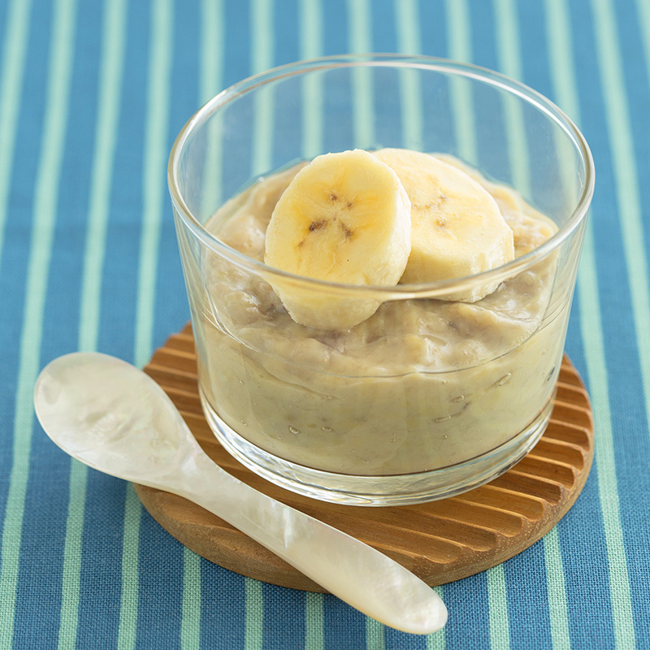

Creamy Banana Pudding
Serves: 1-2 | Cooking Time: 13 mins
Ingredients:
- 2/3 cup banana, mashed (160g)
- Icing sugar - 2 tbsps
- 1/4 tsp salt
- 1 tsp pure vanilla extract
- 3-4 tbsp coconut butter (45-60g)
- 1 package tofu
- 2-4 tbsp sugar of choice
Method:
- Make sure the coconut butter is melted before you begin.
- Combine all ingredients in a blender or food processor, and blend until completely smooth. Makes about 2 cups.
- Omit the tofu, and decrease the coconut butter to 2 tbsp.
- Decrease the salt to 1/8 tsp.
- Add 1 cup cashews that have been soaked in water 4-6 hours and drained fully.
- Vanilla stays the same, and sweeten as desired.
- Add milk of choice if a thinner pudding is desired.